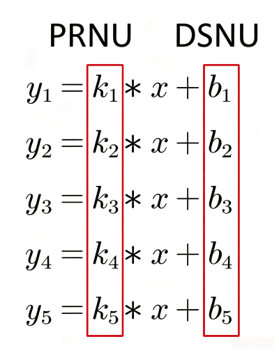

PRNU 和 DSNU
FPN（fixed pattern noise）可以分为 PRNU 和 DSNU，它本质上是指不同像素对于光的响应不同，比如同样是两个光子，像素 A 结果是 2，像素 B 结果是 3。一般直接用一次线性来模拟，也就是 y=kx+b，其中系数就叫做 PRNU，偏移叫做 DSNU。

有的时候会用 PRNU 同时表示这两个概念；有的时候则会用 FPN 单独表示 DSNU，这些称呼很乱，用的时候需要仔细捋清楚。
PRNU 噪声
模型分析
让我们来看一下 PRNU 对信噪比 SNR 的影响，首先回顾之前的模型：
\[
I = L * g + n_{add}
\]
其中 I 是像素值，L 是光子数，g 是增益，n_{add} 是加性噪声。此时期望和方差分别为：
\[
\begin{aligned}
E(I) &= L * g \\
V(I) &= L * g^2 + \sigma^2_{add} \\
\end{aligned}
\]
但是上面这个模型是对于单独一个像素而言，每个像素那么就有所不同，所以需要加上下标：
\[
I_i = L * g_i + n_{add} + b_i
\]
其中 b(i) 就是 DSNU；现在我们把 g(i) 拆成两个部分，即平均值乘上一个偏差，这个偏差就是 PRNU：
\[
\begin{aligned}
I_i &= L * (\bar{g} * k_i) + n_{add} + b_i
\end{aligned}
\]
其中 \(E(k_p) = 1\)
理解模型
此时对于一个图像而言，注意：这个时候时间凝固了，我们只看到一副空间上的图像。也就是我们看到的图像 I 是有多个分布不同的像素组合而来。此时这是一个混合模型问题，即属于 A 类的变量有自己的分布情况，属于 B 类的变量有另外的分布情况，属于 C 类的变量又有另外的分布情况...
为了便于计算，我们不考虑 DSNU，即舍弃了 b(i) 这一项。不然后面计算会相当复杂。
模型构建
这里，我们要做一个模型的修建：
对于 \(I_1, ..., I_n\) 这些像素点而言，他们分别是 \(L*g*k_i+n_i\)，所以我们定义：
\[
K = k_0, k_1, ..., k_n \\
N = n_0, n_1, ..., n_n
\]
所以现在相当于一张图像，他某一个时刻的所有像素作为变量分布是：
\[
X=gKL+N,\qquad L\sim\operatorname{Poisson}(\lambda)
\]
过程可以理解为：
\[
\text{入射光子数 }L
\;\longrightarrow\;
\text{乘像素增益 }K
\;\longrightarrow\;
X
\]
但其实，这里是错误的，PRNU 作用在泊松噪声前，过程可以理解为：
\[
\text{入射光}
\;\xrightarrow{K\text{ 改变探测效率}}\;
\text{光电子数 }L
\;\longrightarrow\;
X
\]
此时的分布：
\[
L\mid K=k\sim\operatorname{Poisson}(\lambda k),
\qquad X=gL+N
\]
求解均值
期望很好计算，能从定义中推出是一个加权平均，而我们这里加权又是均匀的：
\[
\begin{aligned}
E(X) = [E(X_1) + ... + E(X_n)] / N = g\lambda
\end{aligned}
\]
求解方差
方差计算比较复杂，这里先给出最终结果：
\[
\boxed{
\operatorname{Var}(X)
=
g^2\lambda
+
g^2\lambda^2\sigma_K^2
+
\sigma_N^2
}
\]
其中：
\[
\underbrace{g^2\lambda}_{\text{泊松散粒噪声}}
+
\underbrace{g^2\lambda^2\sigma_K^2}_{\text{像素响应不一致 PRNU}}
+
\underbrace{\sigma_N^2}_{\text{加性读出噪声}}
\]
其中 \(\sigma_{K}^2\) 的定义如下，可以把他想象成各个系数的波动情况：
\[
\begin{aligned}
\sigma_{K}^{2} = \frac{1}{N} \sum_{i=1}^{N} (k_i^2)
\end{aligned}
\]
方差推导过程
先求 \(L\) 的条件均值
还记得 \(L\) 是什么吗，是到达的光子数。如果没有像素之间非一致性的话，我们知道他是符合 \(Poisson(\lambda)\) 的，现在有了不一致性。在给定 \(K=k\) 的条件下：
\[
L\mid K=k\sim\operatorname{Poisson}(\lambda k)
\]
泊松分布的均值和方差都等于参数，因此：
\[
E[L\mid K=k]=V[L\mid K=k]=\lambda k \tag{eq.1}
\]
写成随机变量形式：
\[
\boxed{E[L\mid K]=V[L\mid K]=\lambda K}
\]
求 \(L\) 的方差思路
使用全方差公式：
\[
\boxed{
\operatorname{Var}(L)
=
E[\operatorname{Var}(L\mid K)]
+
\operatorname{Var}(E[L\mid K])
}
\]
这两项其实分别表示：
\[
\text{总方差}
=
\text{同一个 }K\text{ 下的随机波动}
+
\text{不同 }K\text{ 导致的均值波动}
\]
之后我们对这两项分别求解。
同一个 \(K\) 下的随机波动
只要能理解上面这个标题，都不用去推导了，这一项就是平均的光子散粒噪声方差，也就是 \(\lambda\) 呗。
所以：
\[
\begin{aligned}
E[\operatorname{Var}(L\mid K)]
&\overset{(eq.1)}{=}
E[\lambda K] = \lambda
\end{aligned}
\]
不同 \(K\) 导致的均值波动
可推出：
\[
\operatorname{Var}(E[L\mid K]) = \operatorname{Var}(\lambda K) = \lambda^2 \operatorname{Var}(K)
\]
最终求出 \(L\) 的方差
根据上面的公式可得
\[
\boxed{
\operatorname{Var}(L)
=
\lambda+\lambda^2\operatorname{Var}(K)
}
\]
由 \(L\) 推导 \(X\) 的方差
下面进行推导：
\[
\operatorname{Var}(X)=\operatorname{Var}(gL+N)
= \operatorname{Var}(gL) + \operatorname{Var}(N)
= g^2 \operatorname{Var}(L) + \sigma_N^2
\]
代入 \(L\) 的方差：
\[
\operatorname{Var}(L) = \lambda + \lambda^2 \sigma_K^2
\]
最终得到：
\[
\operatorname{Var}(X) = g^2 (\lambda + \lambda^2 \sigma_K^2) + \sigma_N^2
= g^2\lambda + g^2\lambda^2\sigma_K^2 + \sigma_N^2
\]
结果分析
现在我们来看一下 SNR：
\[
\begin{aligned}
SNR &= \frac{E(X)}{\sqrt{V(X)}} \\
&= \frac{g\lambda}{\sqrt{g^2\lambda + g^2\lambda^2\sigma_K^2 + \sigma_N^2}} \\
\end{aligned}
\]
假设我们把 \(\sigma_N^2\) 忽略掉，当 \(\lambda\) 很大的时候（也就是曝光时间足够长，光子数足够多），二次项占据主导：
\[
\begin{aligned}
SNR &= \frac{g\lambda}{\sqrt{g^2\lambda + g^2\lambda^2\sigma_K^2 + \sigma_N^2}} \\
&< \frac{g\lambda}{\sqrt{g^2\lambda^2\sigma_K^2}} \\
&= \frac{g}{\sigma_K}
\end{aligned}
\]
所以 PRNU 能够限制 SNR 的上限，也就是说无论光子数 \(\lambda\) 多大，SNR 都不会超过某个值。当然这里前提是 \(\lambda\) 足够大，才能让二次项占据主导地位。因为相机有饱和阈值，所以一般而言，不会到 PRNU 占据主导地位的情况。
对标定的影响
没啥影响，标定的时候做了平均值已经把 PRNU 给平均掉了，所以标定的结果是一个平均值，不受 PRNU 的影响。
PRNU 和 DSNU 的标定
要采集很多暗场图，然后对每个像素单独计算系数 \(k_i\)，最后统计一下 \(\sigma_K^2\) 即可。